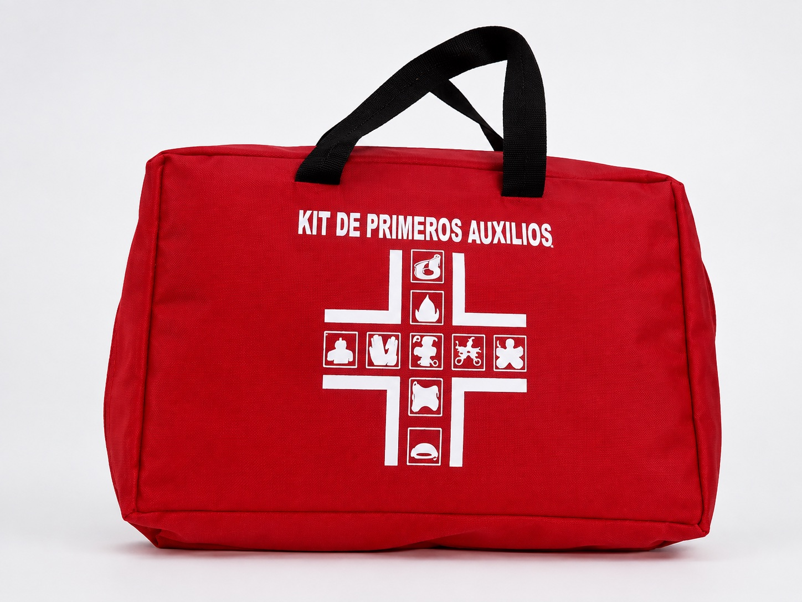
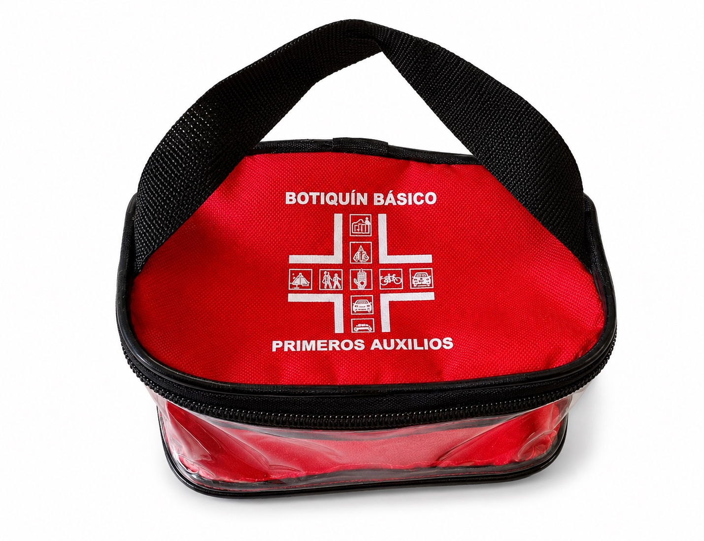
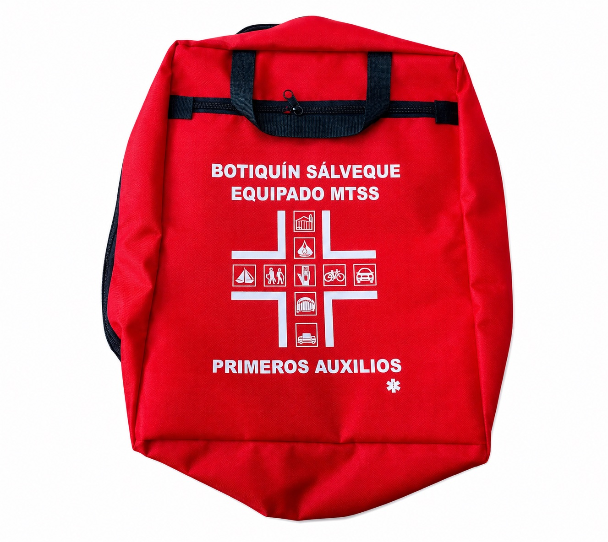
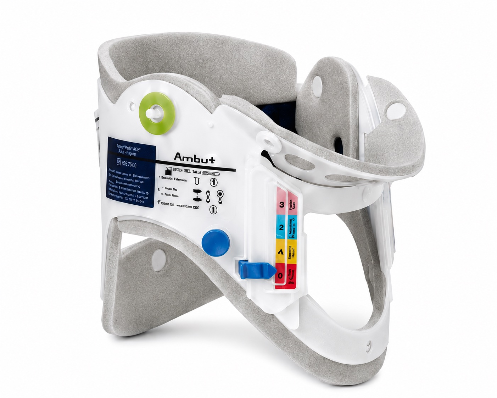
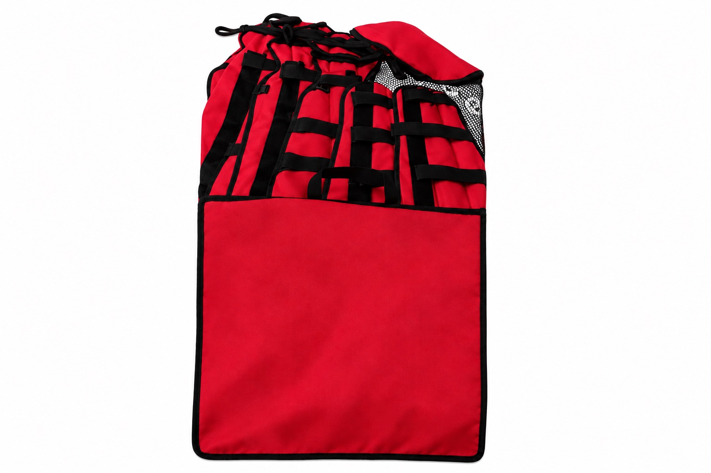
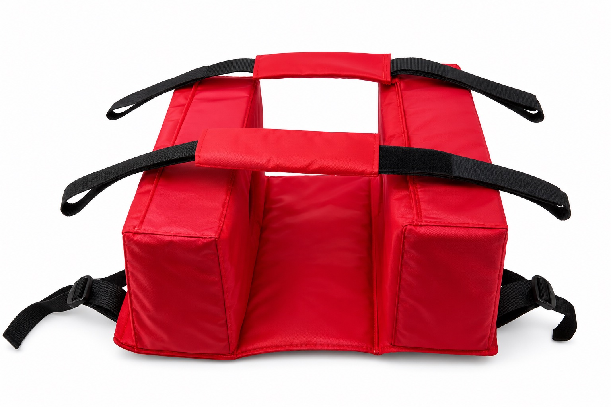
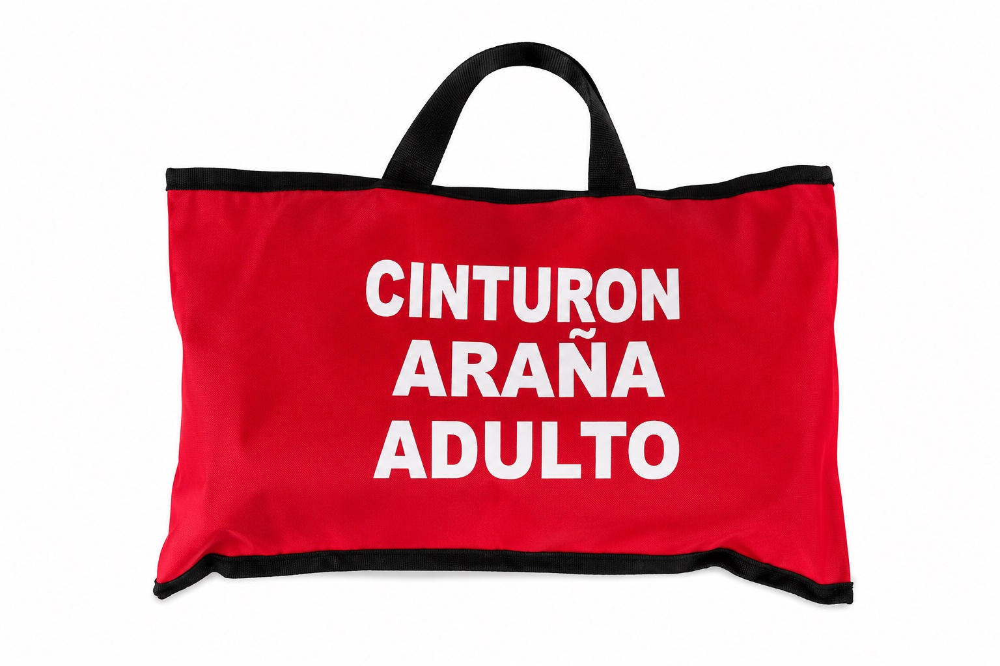
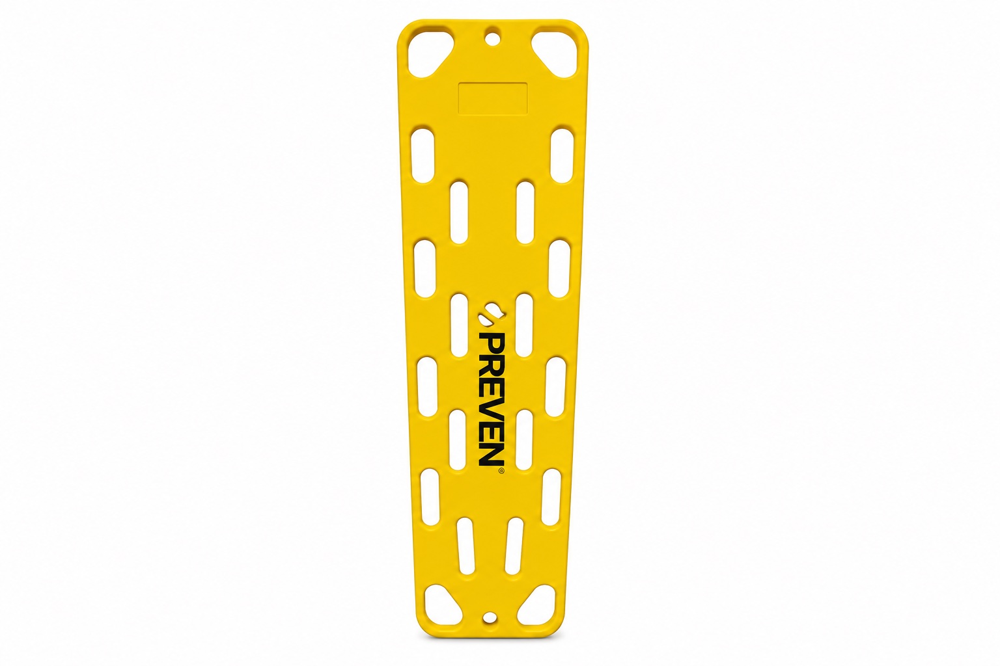
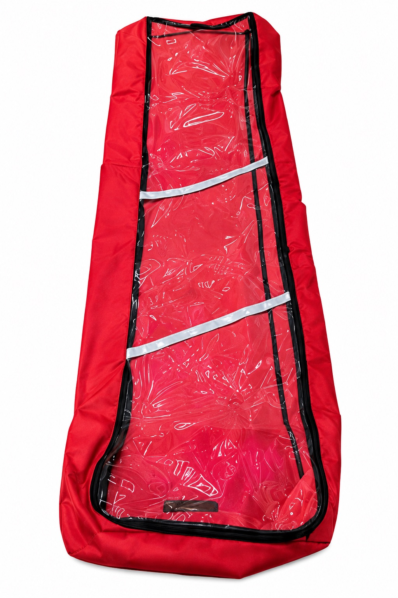

Atención de emergencias
Equipos de primeros auxilios
Botiquines y equipos para inmovilización, movilización y respuesta inicial ante emergencias.
Categoría 01Primeros auxilios
Catálogo
Equipos para atención y movilización
Consulte contenidos, medidas, marcas y disponibilidad con nuestro equipo.








Imágenes de referencia suministradas por OcuPro 360. Especificaciones y disponibilidad sujetas a confirmación.
Cotización
Ir a contacto →Consulte el equipo que necesita
Reciba atención directa por teléfono, WhatsApp o correo electrónico.